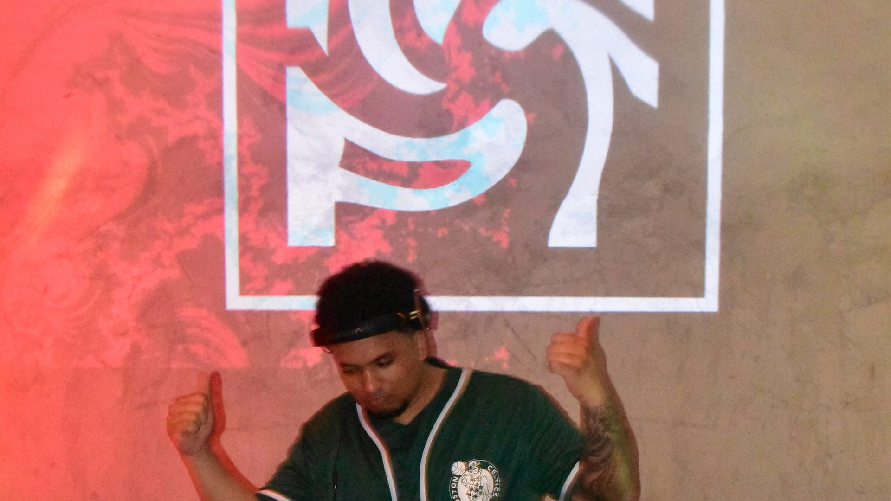

Todo bajo el mismo techo
Booking, producción de evento, sonido, vídeo, diseño y desarrollo. No hay que coordinar cinco proveedores ni explicar el proyecto cinco veces.
Nosotros
Looped no es una agencia con departamentos que no se hablan. Somos un grupo pequeño de gente del sector que produce, mezcla, monta, diseña y programa. Cuando contratas una división, te llevas al equipo entero.
Por qué hacemos esto
Más de tres años con el sello en marcha y más de cinco montando eventos, con estudios de Máster en Producción y Sonido detrás. No aprendemos con tu proyecto, lo aprendimos antes.
personas en el equipo
años con el sello en marcha
años produciendo eventos
ediciones de Open Air Series
El equipo
Toca cualquier tarjeta para ver qué hace cada uno dentro del sello.
Por qué Looped
Ni somos los más grandes ni queremos serlo. Estas son las tres razones por las que la gente repite con nosotros.
Booking, producción de evento, sonido, vídeo, diseño y desarrollo. No hay que coordinar cinco proveedores ni explicar el proyecto cinco veces.
Estudios de producción y sonido, máster y años trabajando en el sector. Tu proyecto no es nuestra práctica, es nuestro oficio.
Open Air Series lo montamos nosotros, con nuestro dinero y nuestro equipo. Sabemos lo que cuesta un evento porque lo pagamos.
Nuestras divisiones
Llevamos a nuestro roster a salas, festivales y promotoras, dentro y fuera de España.
Producción de eventos, grabación, mezcla y composición, todo con equipo propio.
Librerías de audio real y productos sonoros grabados por nosotros, listos para usar.
Webs a medida, software de gestión, automatización y nuestros propios proyectos digitales.
Tutoriales, procesos reales y apuntes de sonido y producción, gratuitos y de pago.
Cuéntanos qué quieres conseguir y nosotros te decimos qué divisiones hacen falta y cuánto cuesta.

Escríbenos con dos líneas sobre lo que tienes en mente y te respondemos en menos de 48 horas.